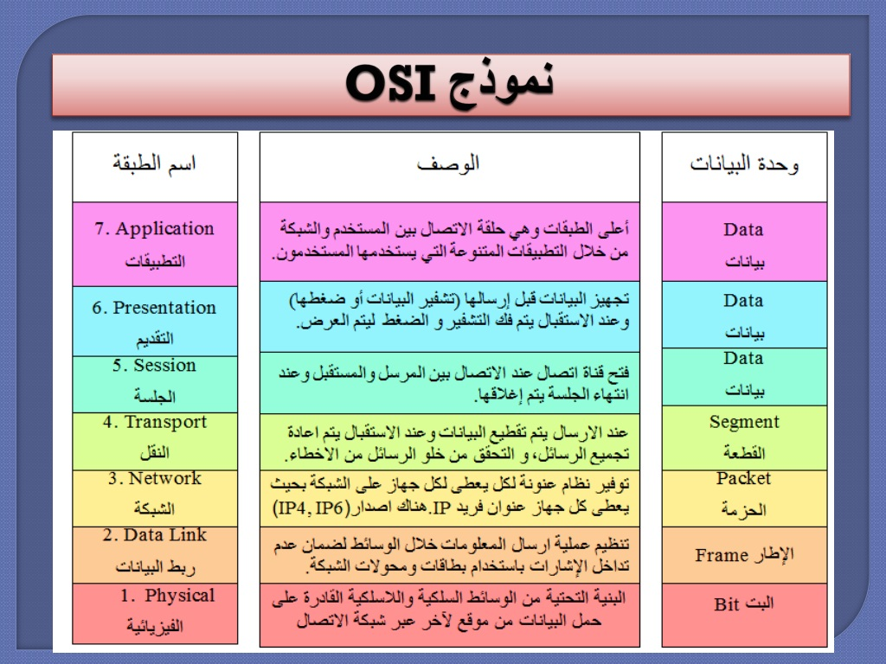
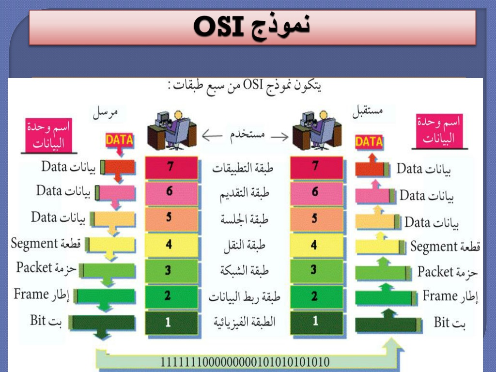
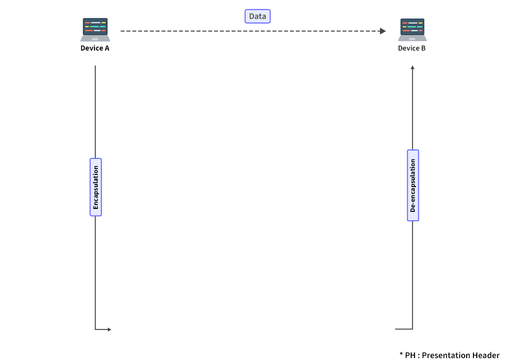
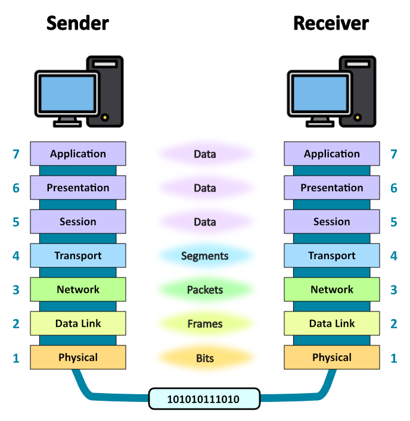
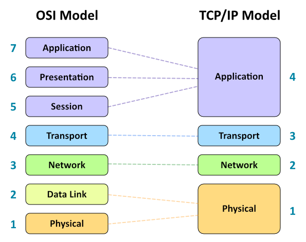

نموذج OSI
ما هو نموذج OSI؟
نموذج OSI (Open Systems Interconnection) هو إطار مرجعي يصف كيفية تواصل أنظمة الشبكات المختلفة مع بعضها البعض. تم تطوير هذا النموذج من قبل المنظمة الدولية للمعايير (ISO) في عام 1984، ويعتبر أساسًا نظريًا مهمًا لفهم كيفية عمل الشبكات.
يقسم نموذج OSI عملية الاتصال بين الأجهزة إلى سبع طبقات متميزة، حيث تؤدي كل طبقة وظيفة محددة وتقدم خدمات للطبقة التي تعلوها. هذا التقسيم يسهل فهم وتصميم وتنفيذ بروتوكولات الشبكات، ويساعد في تحديد وإصلاح المشكلات.
أهمية نموذج OSI
على الرغم من أن نموذج OSI لم يتم تطبيقه بشكل كامل في الشبكات الحديثة (التي تستخدم غالبًا نموذج TCP/IP)، إلا أنه يظل أداة تعليمية وتحليلية مهمة للأسباب التالية:
- التبسيط: يبسط عملية الاتصال المعقدة إلى مكونات أصغر وأكثر قابلية للفهم.
- المعيارية: يسمح بتطوير وتحديث كل طبقة بشكل مستقل عن الطبقات الأخرى.
- التوافقية: يسهل التوافق بين الأنظمة المختلفة من خلال تحديد واجهات قياسية بين الطبقات.
- تحديد المشكلات: يساعد في تحديد وعزل المشكلات في الشبكة بدقة أكبر.
- التعليم: يوفر إطارًا مفاهيميًا لتعليم وفهم مبادئ الشبكات.
طبقات نموذج OSI
يتكون نموذج OSI من سبع طبقات، مرتبة من الأسفل (الأقرب إلى الأجهزة المادية) إلى الأعلى (الأقرب إلى المستخدم والتطبيقات):
1. الطبقة الفيزيائية (Physical Layer)
هي الطبقة الأدنى في نموذج OSI، وتتعامل مع نقل البتات الخام (0 و 1) عبر وسائط الاتصال المادية.
وظائف الطبقة الفيزيائية:
- تحديد الخصائص الفيزيائية لوسائط الاتصال (الكابلات، الموصلات، إلخ).
- تحديد طريقة تمثيل البتات (الجهد الكهربائي، الإشارات الضوئية، إلخ).
- تحديد معدل نقل البيانات.
- تحديد طريقة المزامنة بين المرسل والمستقبل.
- تحديد طريقة الإرسال (أحادي الاتجاه، ثنائي الاتجاه، إلخ).
أمثلة على معايير وأجهزة الطبقة الفيزيائية:
- معايير الكابلات: كابلات الإيثرنت (Cat5, Cat6)، الألياف البصرية.
- المعايير اللاسلكية: IEEE 802.11 (Wi-Fi)، بلوتوث.
- الأجهزة: المكررات (Repeaters)، المحولات (Hubs)، بطاقات الشبكة (NICs).
2. طبقة وصلة البيانات (Data Link Layer)
توفر هذه الطبقة وسيلة لنقل البيانات بين الأجهزة المتصلة مباشرة، وتتعامل مع الأخطاء التي قد تحدث في الطبقة الفيزيائية.
وظائف طبقة وصلة البيانات:
- تأطير البيانات (Framing): تقسيم البيانات إلى إطارات (Frames).
- العنونة الفيزيائية: استخدام عناوين MAC للتعرف على الأجهزة.
- التحكم في الوصول إلى الوسط (MAC): تنظيم الوصول إلى وسائط الاتصال المشتركة.
- اكتشاف الأخطاء وتصحيحها: استخدام تقنيات مثل CRC للتحقق من سلامة البيانات.
- التحكم في التدفق: ضمان عدم إغراق المستقبل بالبيانات.
تنقسم طبقة وصلة البيانات إلى طبقتين فرعيتين:
- طبقة التحكم في الوصول إلى الوسط (MAC): تتعامل مع العنونة الفيزيائية والوصول إلى الوسط.
- طبقة التحكم في الوصلة المنطقية (LLC): توفر واجهة للطبقة العليا (طبقة الشبكة) وتتعامل مع التحكم في الأخطاء والتدفق.
أمثلة على بروتوكولات وأجهزة طبقة وصلة البيانات:
- البروتوكولات: Ethernet، PPP، HDLC.
- الأجهزة: المحولات (Switches)، الجسور (Bridges).
3. طبقة الشبكة (Network Layer)
توفر هذه الطبقة وسيلة لنقل البيانات بين الأجهزة في شبكات مختلفة، وتتعامل مع توجيه البيانات عبر الشبكات المتعددة.
وظائف طبقة الشبكة:
- العنونة المنطقية: استخدام عناوين IP للتعرف على الأجهزة والشبكات.
- التوجيه (Routing): تحديد المسار الأفضل للبيانات من المصدر إلى الوجهة.
- تقسيم وإعادة تجميع الحزم: تقسيم البيانات إلى حزم أصغر إذا لزم الأمر.
- التحكم في الازدحام: منع تدهور أداء الشبكة بسبب الحمل الزائد.
- جودة الخدمة (QoS): ضمان مستوى معين من الأداء للتطبيقات المختلفة.
أمثلة على بروتوكولات وأجهزة طبقة الشبكة:
- البروتوكولات: IP (IPv4, IPv6)، ICMP، OSPF، RIP، BGP.
- الأجهزة: الموجهات (Routers).
4. طبقة النقل (Transport Layer)
توفر هذه الطبقة نقل البيانات بين التطبيقات على الأجهزة المختلفة، وتضمن وصول البيانات بشكل صحيح وكامل.
وظائف طبقة النقل:
- تقسيم وإعادة تجميع الرسائل: تقسيم رسائل التطبيقات إلى قطع أصغر (Segments).
- التحكم في الاتصال: إنشاء وإنهاء الاتصالات بين التطبيقات.
- التحكم في التدفق: ضمان عدم إغراق المستقبل بالبيانات.
- التحكم في الأخطاء: اكتشاف وتصحيح الأخطاء، وإعادة إرسال البيانات المفقودة.
- تعدد الإرسال (Multiplexing): السماح بعدة تطبيقات باستخدام خدمات الشبكة في نفس الوقت.
أنواع خدمات طبقة النقل:
- خدمة موثوقة موجهة للاتصال (Connection-Oriented): مثل TCP، توفر اتصالًا موثوقًا مع التحقق من وصول البيانات وترتيبها.
- خدمة غير موثوقة غير موجهة للاتصال (Connectionless): مثل UDP، توفر نقلًا سريعًا للبيانات دون ضمان الوصول أو الترتيب.
أمثلة على بروتوكولات طبقة النقل:
- TCP (Transmission Control Protocol)
- UDP (User Datagram Protocol)
- SCTP (Stream Control Transmission Protocol)

5. طبقة الجلسة (Session Layer)
توفر هذه الطبقة آلية لإنشاء وإدارة وإنهاء الجلسات بين التطبيقات.
وظائف طبقة الجلسة:
- إنشاء وإنهاء الجلسات بين التطبيقات.
- إدارة الحوار (Dialog Control): تحديد من يمكنه الإرسال ومتى.
- المزامنة (Synchronization): وضع نقاط تفتيش (Checkpoints) لاستئناف نقل البيانات في حالة الفشل.
أمثلة على بروتوكولات طبقة الجلسة:
- NetBIOS
- RPC (Remote Procedure Call)
- SIP (Session Initiation Protocol)
6. طبقة العرض (Presentation Layer)
تتعامل هذه الطبقة مع تنسيق وترميز البيانات لضمان إمكانية قراءتها من قبل طبقة التطبيق.
وظائف طبقة العرض:
- الترجمة: تحويل البيانات بين تنسيقات مختلفة.
- الضغط: تقليل حجم البيانات لتوفير عرض النطاق الترددي.
- التشفير: حماية البيانات من الوصول غير المصرح به.
أمثلة على معايير وبروتوكولات طبقة العرض:
- JPEG، GIF، PNG (تنسيقات الصور)
- MPEG، H.264 (تنسيقات الفيديو)
- SSL/TLS (التشفير)
- ASCII، Unicode (ترميز النصوص)
7. طبقة التطبيق (Application Layer)
هي الطبقة العليا في نموذج OSI، وتوفر واجهة بين تطبيقات المستخدم وخدمات الشبكة.
وظائف طبقة التطبيق:
- توفير خدمات الشبكة للتطبيقات.
- تحديد الموارد المتاحة وشركاء الاتصال.
- مزامنة الاتصال بين التطبيقات.
أمثلة على بروتوكولات طبقة التطبيق:
- HTTP/HTTPS (تصفح الويب)
- FTP (نقل الملفات)
- SMTP، POP3، IMAP (البريد الإلكتروني)
- DNS (نظام أسماء النطاقات)
- Telnet، SSH (الوصول عن بعد)
كيفية عمل نموذج OSI
عندما ترسل بيانات من جهاز إلى آخر عبر الشبكة، تمر هذه البيانات عبر جميع طبقات نموذج OSI في الجهاز المرسل، ثم تمر عبر نفس الطبقات بترتيب عكسي في الجهاز المستقبل:
عملية الإرسال (من الأعلى إلى الأسفل):
- طبقة التطبيق: تنشئ البيانات وتمررها إلى الطبقة التالية.
- طبقة العرض: تنسق البيانات وتضغطها وتشفرها إذا لزم الأمر.
- طبقة الجلسة: تنشئ وتدير الجلسة مع الجهاز المستقبل.
- طبقة النقل: تقسم البيانات إلى قطع وتضيف معلومات التحكم.
- طبقة الشبكة: تضيف عناوين IP وتحدد المسار إلى الوجهة.
- طبقة وصلة البيانات: تضيف عناوين MAC وتنظم الوصول إلى الوسط.
- الطبقة الفيزيائية: تحول البيانات إلى إشارات وترسلها عبر وسائط الاتصال.
عملية الاستقبال (من الأسفل إلى الأعلى):
- الطبقة الفيزيائية: تستقبل الإشارات وتحولها إلى بيانات رقمية.
- طبقة وصلة البيانات: تتحقق من الأخطاء وتزيل معلومات الإطار.
- طبقة الشبكة: تتحقق من عنوان IP وتزيل معلومات التوجيه.
- طبقة النقل: تعيد تجميع القطع وتتحقق من اكتمالها.
- طبقة الجلسة: تتحقق من معلومات الجلسة وتديرها.
- طبقة العرض: تفك التشفير وتفك الضغط وتترجم البيانات.
- طبقة التطبيق: تسلم البيانات إلى التطبيق المناسب.
في كل طبقة، تتم إضافة معلومات التحكم (Header) إلى البيانات أثناء الإرسال، وتتم إزالتها أثناء الاستقبال. هذه العملية تسمى التغليف (Encapsulation) وفك التغليف (Decapsulation).
نموذج OSI مقابل نموذج TCP/IP
نموذج TCP/IP هو النموذج المستخدم فعليًا في الإنترنت والشبكات الحديثة، ويتكون من أربع طبقات بدلاً من سبع طبقات في نموذج OSI.
مقارنة بين النموذجين:
| نموذج OSI | نموذج TCP/IP |
|---|---|
| 7. طبقة التطبيق | 4. طبقة التطبيق |
| 6. طبقة العرض | |
| 5. طبقة الجلسة | |
| 4. طبقة النقل | 3. طبقة النقل |
| 3. طبقة الشبكة | 2. طبقة الإنترنت |
| 2. طبقة وصلة البيانات | 1. طبقة الوصول إلى الشبكة |
| 1. الطبقة الفيزيائية |
الاختلافات الرئيسية:
- نموذج OSI هو نموذج نظري، بينما نموذج TCP/IP هو نموذج عملي تم تطبيقه فعليًا.
- نموذج OSI يفصل وظائف الشبكة بشكل أكثر دقة، بينما نموذج TCP/IP يجمع بعض الوظائف في طبقات أقل.
- نموذج TCP/IP يركز على التوافقية بين الأنظمة المختلفة، بينما نموذج OSI يركز على الفصل الواضح بين الوظائف.
استخدامات نموذج OSI في حل مشكلات الشبكات
يعتبر نموذج OSI أداة قيمة في تشخيص وحل مشكلات الشبكات، حيث يمكن استخدامه لتحديد الطبقة التي تحدث فيها المشكلة:
أمثلة على مشكلات في كل طبقة:
- الطبقة الفيزيائية: كابل مقطوع، جهاز غير متصل، تداخل في الإشارات.
- طبقة وصلة البيانات: أخطاء في عناوين MAC، تصادم في البيانات، إطارات تالفة.
- طبقة الشبكة: أخطاء في عناوين IP، مشكلات في التوجيه، حزم مفقودة.
- طبقة النقل: منافذ مغلقة، اتصالات مرفوضة، تأخير في الاستجابة.
- طبقة الجلسة: فشل في إنشاء الجلسة، انقطاع الجلسة.
- طبقة العرض: مشكلات في التشفير أو الضغط، عدم توافق التنسيقات.
- طبقة التطبيق: أخطاء في البروتوكولات، مشكلات في التطبيقات.
نهج التشخيص من الأسفل إلى الأعلى:
عند مواجهة مشكلة في الشبكة، يمكن استخدام نهج التشخيص من الأسفل إلى الأعلى، حيث يتم التحقق من كل طبقة بدءًا من الطبقة الفيزيائية وصعودًا إلى طبقة التطبيق:
- التحقق من الاتصال الفيزيائي (الكابلات، المؤشرات الضوئية).
- التحقق من عناوين MAC وإعدادات طبقة وصلة البيانات.
- التحقق من عناوين IP وإعدادات التوجيه.
- التحقق من اتصالات TCP/UDP والمنافذ.
- التحقق من جلسات التطبيقات وإعداداتها.
- التحقق من تنسيقات البيانات وإعدادات التشفير.
- التحقق من إعدادات وسلوك التطبيقات.
خلاصة
نموذج OSI هو إطار مرجعي مهم لفهم كيفية عمل الشبكات وبروتوكولاتها. على الرغم من أنه لم يتم تطبيقه بشكل كامل في الشبكات الحديثة، إلا أنه يظل أداة تعليمية وتحليلية قيمة لمهندسي ومسؤولي الشبكات.
يساعد فهم طبقات نموذج OSI ووظائفها في تصميم وتنفيذ وصيانة الشبكات بشكل أفضل، وفي تشخيص وحل المشكلات بشكل أكثر فعالية. كما يوفر لغة مشتركة للتواصل بين المتخصصين في مجال الشبكات.